Unit 5: Torque & Rotational Dynamics第 5 单元：力矩与转动动力学
Extend Newton's laws to rotating systems. Master rotational kinematics, torque, rotational inertia, equilibrium, and combined translation-rotation problems using calculus-based methods.
把 Newton 定律推广到转动系统。用微积分方法掌握转动运动学（rotational kinematics）、力矩（torque）、转动惯量（rotational inertia）、平衡，以及平动与转动相结合的问题。
Extend Newton's laws to rotating systems. Master rotational kinematics, torque, rotational inertia of standard shapes, equilibrium, and combined translation-rotation problems using algebra-based methods.
把 Newton 定律推广到转动系统。用以代数为基础的方法掌握转动运动学（rotational kinematics）、力矩（torque）、标准形状的转动惯量（rotational inertia）、平衡，以及平动与转动相结合的问题。
Rotational Kinematics转动运动学
- Convert between revolutions, degrees and radians ($1\;\text{rev} = 2\pi\;\text{rad}$) and explain why rotational equations need radians.
- Define angular displacement, angular velocity and angular acceleration, with their SI units and sign convention.
- Calculate $\omega$, $\Delta\theta$, $\alpha$ or $t$ for constant angular acceleration with the three rotational kinematic equations.
- Interpret $\theta$-$t$ and $\omega$-$t$ graphs: the slopes give $\omega$ and $\alpha$, and the area under the $\omega$-$t$ graph gives $\Delta\theta$.
- Calculate $\omega(t)$ and $\alpha(t)$ from $\theta(t)$ by differentiation, and $\omega(t)$ from a non-constant $\alpha(t)$ by integration with an initial condition.
- 在圈、角度与弧度之间换算（$1\;\text{rev} = 2\pi\;\text{rad}$），并解释为什么转动方程必须用弧度。
- 定义角位移、角速度与角加速度，写出它们的 SI 单位与正负号约定。
- 用三条转动运动学方程计算恒定角加速度下的 $\omega$、$\Delta\theta$、$\alpha$ 或 $t$。
- 解读（
interpret）$\theta$-$t$ 与 $\omega$-$t$ 图像：斜率给出 $\omega$ 和 $\alpha$，$\omega$-$t$ 图线下的面积给出 $\Delta\theta$。 - 由 $\theta(t)$ 求导得到 $\omega(t)$ 与 $\alpha(t)$；对随时间变化的 $\alpha(t)$ 积分并利用初始条件求出 $\omega(t)$。
If you have mastered one-dimensional kinematics from Unit 1, you already know the skeleton of rotational kinematics: only the variable names change. Instead of position $x$, velocity $v$, and acceleration $a$, you work with angular displacement $\theta$, angular velocity $\omega$, and angular acceleration $\alpha$. The mathematics is identical; the physics shifts from straight-line motion to rotation about a fixed axis.
如果你已经掌握 Unit 1 的一维运动学，那转动运动学（rotational kinematics）的骨架你已经会了，只是把变量名换一下。把位置 $x$、速度 $v$、加速度 $a$ 换成角位移（angular displacement）$\theta$、角速度（angular velocity）$\omega$、角加速度（angular acceleration）$\alpha$。数学完全相同，物理由直线运动改为绕固定轴的转动。
Angular Displacement角位移
Angular displacement measures the angle, in radians, through which a point on a rigid body rotates about a specified axis. A rigid system maintains its shape; different points can move in different directions during rotation, so it cannot be modeled as a single point particle.
角位移以弧度（radian）为单位，度量刚体（rigid body）上某点绕指定轴转过的角度。刚体在转动中保持形状不变，上面不同的点会朝不同方向运动，所以刚体不能简化为一个质点。
By convention, counterclockwise rotation (viewed from above) is positive and clockwise is negative.
按约定，从上方观察时逆时针（counterclockwise）为正，顺时针（clockwise）为负。
Angular Velocity & Acceleration角速度与角加速度
Angular velocity is the time derivative of angular position.
角速度是角位置对时间的导数。
Angular acceleration is the second derivative of angular position.
角加速度是角位置对时间的二阶导数。
Constant Angular Acceleration Equations恒定角加速度方程组
When $\alpha$ is constant, three rotational kinematic equations mirror their linear counterparts exactly. Replace $x \to \theta$, $v \to \omega$, and $a \to \alpha$:
当 $\alpha$ 为常量时，三条转动运动学方程与其直线运动版本一一对应，只需把 $x \to \theta$、$v \to \omega$、$a \to \alpha$：
| Linear平动 | Rotational转动 | SI UnitSI 单位 |
|---|---|---|
| Displacement $\Delta x$位移 $\Delta x$ | $\Delta\theta$ | rad |
| Velocity $v$速度 $v$ | $\omega$ | rad/s |
| Acceleration $a$加速度 $a$ | $\alpha$ | rad/s² |
| Mass $m$质量 $m$ | Rotational inertia $I$转动惯量 $I$ | kg·m² |
| Force $F$力 $F$ | Torque $\tau$力矩 $\tau$ | N·m |
| $F = ma$ | $\tau = I\alpha$ | – |
Graphs of $\theta(t)$, $\omega(t)$, and $\alpha(t)$ relate to each other just like graphs of $x(t)$, $v(t)$, and $a(t)$: the slope of a $\theta$-vs-$t$ graph gives $\omega$, the slope of an $\omega$-vs-$t$ graph gives $\alpha$, and the area under an $\omega$-vs-$t$ graph gives $\Delta\theta$.
$\theta(t)$、$\omega(t)$、$\alpha(t)$ 三种图像之间的关系，与 $x(t)$、$v(t)$、$a(t)$ 完全相同：$\theta$–$t$ 图的斜率为 $\omega$，$\omega$–$t$ 图的斜率为 $\alpha$，$\omega$–$t$ 曲线下方的面积为 $\Delta\theta$。
Worked Example: Spinning Wheel例题：转动的轮
A wheel starts from rest and accelerates uniformly at $\alpha = 3.0\;\text{rad/s}^2$. Find $\omega$ and $\Delta\theta$ after $4.0\;\text{s}$.
轮从静止开始以恒定角加速度 $\alpha = 3.0\;\text{rad/s}^2$ 加速。求 $4.0\;\text{s}$ 后的 $\omega$ 与 $\Delta\theta$。
Worked Example: Non-Constant α by Integration例题：用积分处理变化的 α Physics C
A disk has angular acceleration $\alpha(t) = 6t - 2\;\text{rad/s}^2$ and initial angular velocity $\omega_0 = 4\;\text{rad/s}$. Find $\omega(t)$ and $\omega$ at $t = 3\;\text{s}$.
圆盘的角加速度 $\alpha(t) = 6t - 2\;\text{rad/s}^2$，初始角速度 $\omega_0 = 4\;\text{rad/s}$。求 $\omega(t)$ 及 $t = 3\;\text{s}$ 时的 $\omega$。
Worked Example: A Fan Slowing to Rest例题：减速至停止的风扇
A ceiling fan turning at $12\;\text{rad/s}$ is switched off and slows uniformly to rest in $6.0\;\text{s}$. Find its angular acceleration and the number of revolutions it makes while stopping.
以 $12\;\text{rad/s}$ 转动的吊扇断电后匀减速，经 $6.0\;\text{s}$ 停止。求其角加速度以及停下前转过的圈数。
Rotational kinematic equations work only in radians: convert revolutions with $1\;\text{rev} = 2\pi\;\text{rad}$ before substituting, and convert back at the end if the question asks for revolutions. Choose the equation by the quantity you are not given, exactly as in Unit 1 (no time given: use $\omega^2 = \omega_0^2 + 2\alpha\Delta\theta$). When $\omega$ and $\alpha$ point opposite ways, write the sign convention first, so a slowing wheel gets a negative $\alpha$.
转动运动学方程只能用弧度：代入前先用 $1\;\text{rev} = 2\pi\;\text{rad}$ 把圈数换算成弧度；若题目要求圈数，最后再换算回去。和 Unit 1 一样，按题目没有给出的那个量来选方程（没有给时间就用 $\omega^2 = \omega_0^2 + 2\alpha\Delta\theta$）。当 $\omega$ 与 $\alpha$ 方向相反时，先写明正方向，减速的轮子 $\alpha$ 为负。
If $\alpha$ changes with time, the constant-$\alpha$ equations do not apply: integrate $\alpha(t)$ to get $\omega(t)$ and use $\omega(0)$ to fix the constant.
若 $\alpha$ 随时间变化，恒定 $\alpha$ 的方程不再适用：对 $\alpha(t)$ 积分得到 $\omega(t)$，并用 $\omega(0)$ 定出积分常数。
1. A turntable spins at $45$ revolutions per minute. Express its angular velocity in rad/s.1. 唱盘以每分钟 $45$ 圈的转速转动。用 rad/s 表示其角速度。
$\omega = 45 \times \dfrac{2\pi\;\text{rad}}{60\;\text{s}} = 1.5\pi \approx 4.71\;\text{rad/s}$. Multiply by $2\pi$ to turn revolutions into radians and divide by $60$ to turn minutes into seconds.
$\omega = 45 \times \dfrac{2\pi\;\text{rad}}{60\;\text{s}} = 1.5\pi \approx 4.71\;\text{rad/s}$。乘以 $2\pi$ 把圈换成弧度，除以 $60$ 把分钟换成秒。
2. A wheel turning at $4.0\;\text{rad/s}$ speeds up uniformly to $10\;\text{rad/s}$ while turning through $14\;\text{rad}$. Find its angular acceleration and the time taken.2. 以 $4.0\;\text{rad/s}$ 转动的轮匀加速到 $10\;\text{rad/s}$，期间转过 $14\;\text{rad}$。求角加速度与所用时间。
No time is given, so use $\omega^2 = \omega_0^2 + 2\alpha\Delta\theta$: $100 = 16 + 2\alpha(14)$, so $\alpha = 84/28 = 3.0\;\text{rad/s}^2$. Then $t = (\omega - \omega_0)/\alpha = 6.0/3.0 = 2.0\;\text{s}$. Check: average $\omega$ times $t$ is $(7.0)(2.0) = 14\;\text{rad}$.
题目没有给时间，用 $\omega^2 = \omega_0^2 + 2\alpha\Delta\theta$：$100 = 16 + 2\alpha(14)$，得 $\alpha = 84/28 = 3.0\;\text{rad/s}^2$。再由 $t = (\omega - \omega_0)/\alpha = 6.0/3.0 = 2.0\;\text{s}$。验算：平均 $\omega$ 乘以 $t$ 为 $(7.0)(2.0) = 14\;\text{rad}$。
3. An $\omega$-$t$ graph is a straight line from $2.0\;\text{rad/s}$ at $t = 0$ to $8.0\;\text{rad/s}$ at $t = 3.0\;\text{s}$. Find $\alpha$ and $\Delta\theta$ over these $3.0\;\text{s}$.3. 某 $\omega$-$t$ 图像是一条直线，$t = 0$ 时为 $2.0\;\text{rad/s}$，$t = 3.0\;\text{s}$ 时为 $8.0\;\text{rad/s}$。求这 $3.0\;\text{s}$ 内的 $\alpha$ 与 $\Delta\theta$。
The slope gives $\alpha = (8.0 - 2.0)/3.0 = 2.0\;\text{rad/s}^2$. The area under the line is a trapezoid: $\Delta\theta = \tfrac{1}{2}(2.0 + 8.0)(3.0) = 15\;\text{rad}$.
斜率给出 $\alpha = (8.0 - 2.0)/3.0 = 2.0\;\text{rad/s}^2$。图线下的面积是梯形：$\Delta\theta = \tfrac{1}{2}(2.0 + 8.0)(3.0) = 15\;\text{rad}$。
4. A wheel's angle is $\theta(t) = 2t^3 - 3t^2$ (rad, $t$ in s). Find $\omega$ and $\alpha$ at $t = 2.0\;\text{s}$.4. 某轮的角位置为 $\theta(t) = 2t^3 - 3t^2$（rad，$t$ 以 s 为单位）。求 $t = 2.0\;\text{s}$ 时的 $\omega$ 与 $\alpha$。 Physics C
$\omega = d\theta/dt = 6t^2 - 6t = 24 - 12 = 12\;\text{rad/s}$ and $\alpha = d\omega/dt = 12t - 6 = 18\;\text{rad/s}^2$ at $t = 2.0\;\text{s}$. Because $\alpha$ depends on $t$, the constant-$\alpha$ equations would give wrong answers here.
$t = 2.0\;\text{s}$ 时，$\omega = d\theta/dt = 6t^2 - 6t = 24 - 12 = 12\;\text{rad/s}$，$\alpha = d\omega/dt = 12t - 6 = 18\;\text{rad/s}^2$。由于 $\alpha$ 随 $t$ 变化，这里若用恒定 $\alpha$ 的方程会得出错误结果。
Connecting Linear & Rotational Motion平动与转动的联系
- Relate arc length, tangential speed and tangential acceleration to $\theta$, $\omega$ and $\alpha$ with $s = r\theta$, $v = r\omega$ and $a_T = r\alpha$.
- Explain why every point on a rigid body has the same $\omega$ and $\alpha$ but a different $v$ and $a_T$.
- Calculate the centripetal acceleration $a_c = r\omega^2$ and combine it with $a_T$ to find the total acceleration of a point.
- State the rolling-without-slipping conditions $v_{\text{cm}} = R\omega$ and $a_{\text{cm}} = R\alpha$.
- 用 $s = r\theta$、$v = r\omega$、$a_T = r\alpha$ 把弧长、切向速率与切向加速度同 $\theta$、$\omega$、$\alpha$ 联系起来。
- 解释为什么刚体上每一点的 $\omega$ 与 $\alpha$ 相同，而 $v$ 与 $a_T$ 不同。
- 计算向心加速度 $a_c = r\omega^2$，并与 $a_T$ 合成，求出某点的合加速度。
- 写出（
state）无滑滚动条件 $v_{\text{cm}} = R\omega$ 与 $a_{\text{cm}} = R\alpha$。
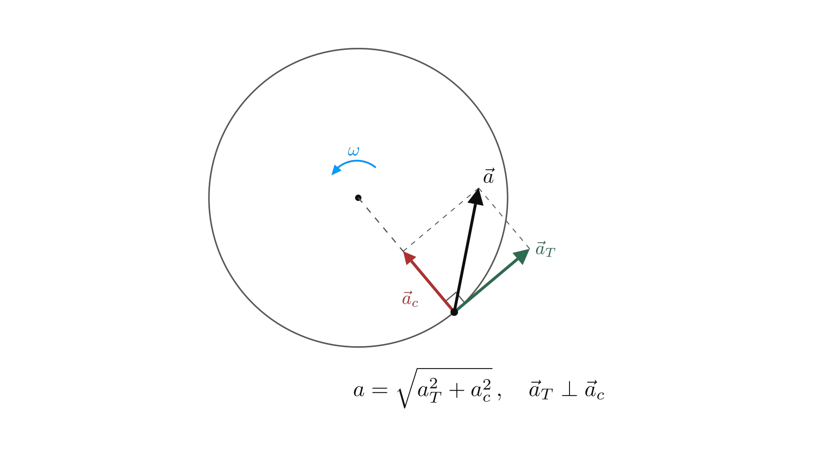
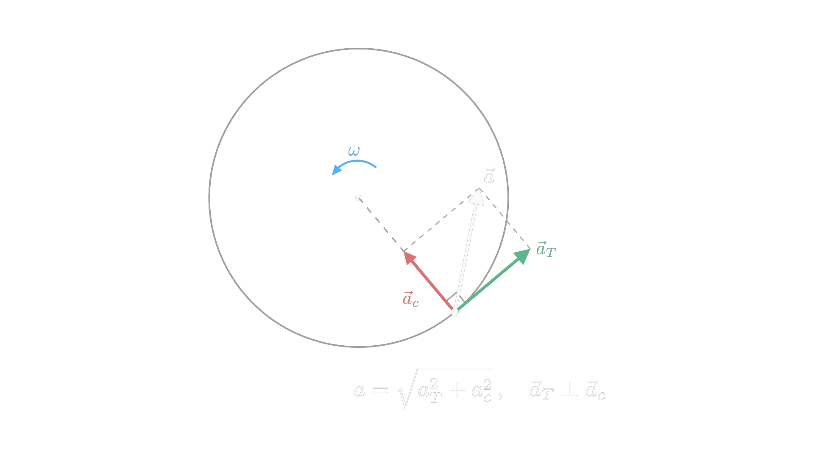
Every point on a rotating rigid body simultaneously undergoes rotational motion (described by $\theta$, $\omega$, $\alpha$) and linear motion (described by $s$, $v$, $a_T$). The bridge between these descriptions is the distance $r$ from the point to the axis of rotation.
旋转刚体上的每一点都同时进行着转动（用 $\theta$、$\omega$、$\alpha$ 描述）和平动（用 $s$、$v$、$a_T$ 描述）。把这两套描述连起来的桥梁，就是该点到转轴的距离 $r$。
where $\theta$ is in radians
其中 $\theta$ 取弧度（radian）
Differentiating with respect to time yields the tangential speed and tangential acceleration:
两边对时间求导，得到切向速度（tangential velocity）与切向加速度（tangential acceleration）：
Every point turns through the same angle in the same time, so dividing $s = r\theta$ by the elapsed time gives the tangential speed, and the same step applied to a change in speed gives the tangential acceleration:
每一点在相同时间内转过相同的角度，所以把 $s = r\theta$ 除以所用时间便得到切向速度（tangential velocity）；对速率的变化做同样处理，得到切向加速度（tangential acceleration）：
The tangential acceleration $a_T = r\alpha$ accounts only for changes in the speed along the circular path. The centripetal (radial) acceleration $a_c = v^2/r = r\omega^2$ is always present whenever the point moves in a circle and points inward toward the axis.
切向加速度 $a_T = r\alpha$ 只对应沿圆周方向速率大小的变化。只要点在做圆周运动，向心（径向）加速度（centripetal acceleration）$a_c = v^2/r = r\omega^2$ 始终存在，方向指向圆心。
$a_T$ and $a_c$ are always perpendicular.
$a_T$ 与 $a_c$ 始终相互垂直。
Worked Example: Two Points on a Turntable例题：转盘上两点的对比
A turntable of radius R = 0.15 m spins at ω = 3.5 rad/s.
Compare tangential speeds at r₁ = 0.05 m and r₂ = 0.15 m.
半径 R = 0.15 m 的转盘以 ω = 3.5 rad/s 旋转。
比较 r₁ = 0.05 m 与 r₂ = 0.15 m 处的切向速度。
rolling without slipping，又称纯滚动）的物体，接触点相对地面瞬时速度为零。这给出约束条件 $v_{\text{cm}} = R\omega$ 与 $a_{\text{cm}} = R\alpha$，是把平动和转动方程联立时的关键。
Worked Example: Total Acceleration of a Speeding-Up Point例题：加速旋转中一点的合加速度
A point at $r = 0.40$ m on a spinning wheel has $\omega = 5.0$ rad/s and $\alpha = 2.0$ rad/s² at some instant. Find the magnitude of its total acceleration.
旋转轮上 $r = 0.40$ m 处的一点，在某瞬时 $\omega = 5.0$ rad/s、$\alpha = 2.0$ rad/s²。求其合加速度的大小。
Keep $\omega$ in rad/s when you use $v = r\omega$: the radian has no unit, so metres times rad/s gives m/s, but rev/min must be converted first. Do not swap the two accelerations: $a_T = r\alpha$ is zero for steady rotation, while $a_c = r\omega^2$ is never zero for a point that is turning. If a question asks for "the acceleration" of a point, combine them as perpendicular components.
使用 $v = r\omega$ 时 $\omega$ 要用 rad/s：弧度没有单位，所以米乘以 rad/s 得到 m/s；但 rev/min 必须先换算。不要把两种加速度弄混：匀速转动时 $a_T = r\alpha$ 为零，而只要点在转动，$a_c = r\omega^2$ 就不为零。若题目问某点的"加速度"，要把两者作为互相垂直的分量合成。
1. A bicycle wheel of radius $0.35\;\text{m}$ turns at $20\;\text{rad/s}$. Find the speed of a point on the rim and of a point $0.10\;\text{m}$ from the axle.1. 半径 $0.35\;\text{m}$ 的自行车轮以 $20\;\text{rad/s}$ 转动。求轮缘上一点以及距轮轴 $0.10\;\text{m}$ 处一点的速率。
Rim: $v = (0.35)(20) = 7.0\;\text{m/s}$. Inner point: $v = (0.10)(20) = 2.0\;\text{m/s}$. Both points share the same $\omega$; the speed grows in proportion to $r$.
轮缘：$v = (0.35)(20) = 7.0\;\text{m/s}$。内侧点：$v = (0.10)(20) = 2.0\;\text{m/s}$。两点的 $\omega$ 相同，速率与 $r$ 成正比。
2. A merry-go-round turns at constant angular velocity. Does a rider have a tangential acceleration? A centripetal acceleration?2. 旋转木马以恒定角速度转动。乘客有切向加速度吗？有向心加速度吗？
No tangential acceleration: $\alpha = 0$, so $a_T = r\alpha = 0$. Yes, a centripetal acceleration $a_c = r\omega^2$ toward the axis, because the direction of the rider's velocity keeps changing.
没有切向加速度：$\alpha = 0$，所以 $a_T = r\alpha = 0$。有向心加速度 $a_c = r\omega^2$，指向转轴，因为乘客速度的方向一直在改变。
3. A car tire of radius $0.30\;\text{m}$ rolls without slipping at $15\;\text{m/s}$ while the car speeds up at $3.0\;\text{m/s}^2$. Find the tire's $\omega$ and $\alpha$.3. 半径 $0.30\;\text{m}$ 的轮胎以 $15\;\text{m/s}$ 无滑滚动，同时汽车以 $3.0\;\text{m/s}^2$ 加速。求轮胎的 $\omega$ 与 $\alpha$。
Rolling without slipping: $\omega = v/R = 15/0.30 = 50\;\text{rad/s}$ and $\alpha = a/R = 3.0/0.30 = 10\;\text{rad/s}^2$.
无滑滚动：$\omega = v/R = 15/0.30 = 50\;\text{rad/s}$，$\alpha = a/R = 3.0/0.30 = 10\;\text{rad/s}^2$。
Torque力矩
- Calculate torque with $\tau = rF\sin\theta$ or as force times lever arm, $\tau = Fd$.
- Identify the lever arm as the perpendicular distance from the axis to the line of action of the force.
- Assign a sign to each torque (counterclockwise positive) and add them to find the net torque.
- Explain why a force through the axis, or parallel to $\vec{r}$, produces zero torque.
- Draw an extended force diagram that shows where each force acts on the body.
- 用 $\tau = rF\sin\theta$ 或"力乘以力臂" $\tau = Fd$ 计算力矩。
- 识别力臂（
lever arm）：转轴到力的作用线的垂直距离。 - 给每个力矩定正负号（逆时针为正），并求和得到合力矩。
- 解释为什么通过转轴或与 $\vec{r}$ 平行的力不产生力矩。
- 画出扩展受力图，标明每个力作用在物体上的位置。
Torque is to rotation what force is to translation. A force pushes an object across the floor; a torque makes it spin. Torque depends on three factors: the magnitude of the force, the distance from the axis of rotation to the point where the force is applied, and the angle between the force vector and the position vector.
力矩（torque）之于转动，正如力之于平动。力把物体推过地面，力矩则让它转动。力矩取决于三个因素：力的大小、力作用点到转轴的距离，以及力矢量与位置矢量的夹角。
Equivalently: $\tau = Fd$, where $d = r\sin\theta$ is the lever arm (moment arm).
等价地：$\tau = Fd$，其中 $d = r\sin\theta$ 是力臂（lever arm / moment arm）。
Only the force component perpendicular to $\vec{r}$ produces torque. The parallel component pushes along $\vec{r}$ without causing rotation. The lever arm $d$ is the perpendicular distance from the axis to the line of action of the force.
只有与 $\vec{r}$ 垂直的力分量才产生力矩；沿 $\vec{r}$ 方向的分量只是把物体推沿 $\vec{r}$，不会引起转动。力臂$d$ 是转轴到力的作用线（line of action）的垂直距离。
Force Diagrams for Torque力矩的受力图
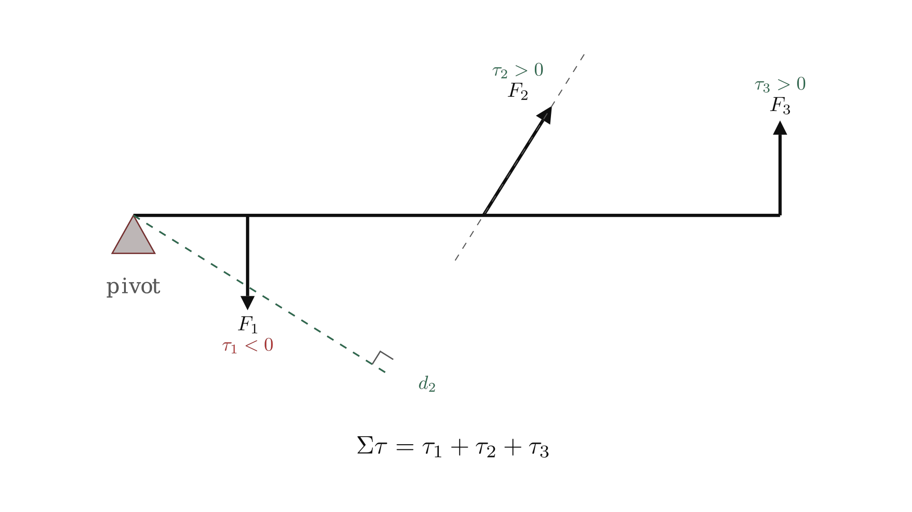
When analyzing torque, draw a force diagram (extended free-body diagram) that shows not just the magnitude and direction of each force, but also where each force is applied on the extended body relative to the pivot. This spatial information is essential for calculating torques.
分析力矩时要画受力图（扩展受力图，extended free-body diagram），不仅标出每个力的大小和方向，还要明确它作用在扩展物体上、相对支点的具体位置。这一空间信息对计算力矩不可或缺。
The Cross Product矢量积（叉积） Physics C
The cross product $\vec{A} \times \vec{B}$ yields a vector perpendicular to both $\vec{A}$ and $\vec{B}$, with magnitude $AB\sin\theta$. The direction follows the right-hand rule: curl your fingers from $\vec{A}$ toward $\vec{B}$, and your thumb points in the direction of $\vec{A} \times \vec{B}$.
矢量积（cross product，又称叉积）$\vec{A} \times \vec{B}$ 给出一个同时垂直于 $\vec{A}$ 与 $\vec{B}$ 的矢量，大小为 $AB\sin\theta$。方向由右手定则（right-hand rule）确定：四指从 $\vec{A}$ 沿 $\vec{B}$ 弯曲，大拇指即指向 $\vec{A} \times \vec{B}$。
In AP Physics 1 you only need the magnitude of a torque and whether it tends to turn the object clockwise or counterclockwise. The direction of torque as a vector (the right-hand rule) is beyond the course.
在 AP Physics 1 中，你只需要掌握力矩的大小，以及它使物体趋于顺时针还是逆时针转动。把力矩作为矢量时的方向（右手定则）不在课程范围内。
Worked Example: Torque on a Bolt例题：螺栓受到的力矩
A mechanic applies F = 80 N at the end of a 0.25 m wrench
at 60° from the wrench handle. Find the torque.
技师在 0.25 m 长扳手的末端施加 F = 80 N 的力，
与扳手柄方向夹角 60°。求力矩。
Worked Example: Net Torque from Two Forces例题：两个力产生的合力矩
A uniform beam is pivoted at its center. A $40\;\text{N}$ force pushes straight down on the beam $0.50\;\text{m}$ to the left of the pivot. A $25\;\text{N}$ force pulls on the right end, $0.80\;\text{m}$ from the pivot, directed $30^{\circ}$ below the beam. Find the net torque about the pivot.
一根均匀梁绕其中点转动。$40\;\text{N}$ 的力在支点左侧 $0.50\;\text{m}$ 处竖直向下压梁；$25\;\text{N}$ 的力拉梁的右端（距支点 $0.80\;\text{m}$），方向在梁下方并与梁成 $30^{\circ}$。求绕支点的合力矩。
hinged），在距铰链 $L/4$ 处施加一个垂直于杆的力 $F$。绕铰链的力矩是多少？Name the axis before you compute anything, then give each force its $r$ and angle, or its lever arm. The angle in $\tau = rF\sin\theta$ is between $\vec{r}$ and $\vec{F}$, not between the force and the horizontal, so check on your diagram whether the perpendicular part of the force is $F\sin\theta$ or $F\cos\theta$. Give torque in N·m, not J, even though the base units are the same.
先指明转轴再计算，然后给每个力写出 $r$ 与夹角，或直接写出力臂。$\tau = rF\sin\theta$ 中的角是 $\vec{r}$ 与 $\vec{F}$ 的夹角，而不是力与水平方向的夹角，所以要在图上确认力的垂直分量是 $F\sin\theta$ 还是 $F\cos\theta$。力矩单位写 N·m，不要写 J，尽管两者的基本单位相同。
1. You push a door at $90^{\circ}$ with $15\;\text{N}$, $0.90\;\text{m}$ from the hinges. What torque do you exert? What force gives the same torque if you push $0.30\;\text{m}$ from the hinges?1. 你在距合页 $0.90\;\text{m}$ 处以 $15\;\text{N}$ 的力沿 $90^{\circ}$ 方向（垂直于门）推门。力矩是多少？若改在距合页 $0.30\;\text{m}$ 处推，需要多大的力才能产生相同的力矩？
$\tau = (0.90)(15) = 13.5\;\text{N}\cdot\text{m}$. At $0.30\;\text{m}$: $F = 13.5/0.30 = 45\;\text{N}$, three times the force for one third of the lever arm.
$\tau = (0.90)(15) = 13.5\;\text{N}\cdot\text{m}$。在 $0.30\;\text{m}$ 处：$F = 13.5/0.30 = 45\;\text{N}$，力臂变为三分之一，所需的力变为三倍。
2. Why does a push along the line of the hinges, however hard, not turn a door?2. 为什么沿合页所在直线推门，无论多用力都推不动门转动？
The line of action passes through the axis, so the lever arm is zero and $\tau = Fd = 0$ for any size of force.
力的作用线通过转轴，力臂为零，因此无论力多大，$\tau = Fd = 0$。
3. A $50\;\text{N}$ force acts at the end of a $0.40\;\text{m}$ wrench at $150^{\circ}$ to $\vec{r}$. Find the magnitude of the torque.3. $50\;\text{N}$ 的力作用在 $0.40\;\text{m}$ 长扳手的末端，与 $\vec{r}$ 成 $150^{\circ}$。求力矩大小。
$\tau = (0.40)(50)\sin 150^{\circ} = (20)(0.50) = 10\;\text{N}\cdot\text{m}$. This equals the torque at $30^{\circ}$, because $\sin 150^{\circ} = \sin 30^{\circ}$.
$\tau = (0.40)(50)\sin 150^{\circ} = (20)(0.50) = 10\;\text{N}\cdot\text{m}$。这与 $30^{\circ}$ 时的力矩相等，因为 $\sin 150^{\circ} = \sin 30^{\circ}$。
Rotational Inertia转动惯量
- Calculate the rotational inertia of a system of point masses with $I = \sum m_i r_i^2$.
- Explain why $I$ depends on how the mass is distributed relative to the axis, not only on the total mass.
- Select $I$ for a hoop, disk, sphere, spherical shell or rod from a table, matching the axis.
- Apply the parallel-axis theorem $I' = I_{\text{cm}} + Md^2$ to an axis that does not pass through the center of mass.
- Derive $I$ for a uniform rod, a solid disk and a non-uniform rod by evaluating $I = \int r^2\,dm$.
- 用 $I = \sum m_i r_i^2$ 计算质点组的转动惯量。
- 解释为什么 $I$ 取决于质量相对转轴的分布，而不仅仅取决于总质量。
- 根据转轴从表中选出圆环、圆盘、实心球、球壳或细杆的 $I$。
- 对不通过质心的转轴应用平行轴定理 $I' = I_{\text{cm}} + Md^2$。
- 通过计算 $I = \int r^2\,dm$ 推导均匀细杆、实心圆盘与非均匀细杆的 $I$。
Rotational inertia (moment of inertia) is the rotational analog of mass. While mass measures resistance to changes in linear motion, rotational inertia $I$ measures resistance to changes in rotational motion. Crucially, $I$ depends not only on total mass but on how that mass is distributed relative to the axis of rotation.
转动惯量（rotational inertia / moment of inertia）是平动中质量的转动对应物。质量度量物体抵抗平动状态改变的能力，而转动惯量 $I$ 度量它抵抗转动状态改变的能力。关键在于：$I$ 不仅取决于总质量，还取决于质量相对转轴如何分布。
$r$ = perpendicular distance from the axis
$r$ = 到转轴的垂直距离
For an extended object, take $I$ from the table of standard shapes below. Each entry is the total of $mr^2$ over every small piece of the object, so mass far from the axis counts for more.
对于扩展物体，可从下面的标准形状表中查出 $I$。表中每一项都是物体各个小部分的 $mr^2$ 之和，所以离转轴越远的质量贡献越大。
hoop，$I = MR^2$）的转动惯量比实心圆盘（disk，$I = \frac{1}{2}MR^2$）大：圆环所有质量都集中在最大半径 $R$ 处。
Common Rotational Inertias常见物体的转动惯量
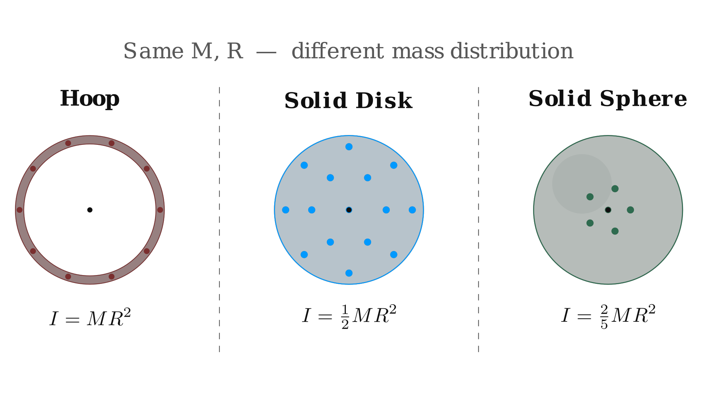
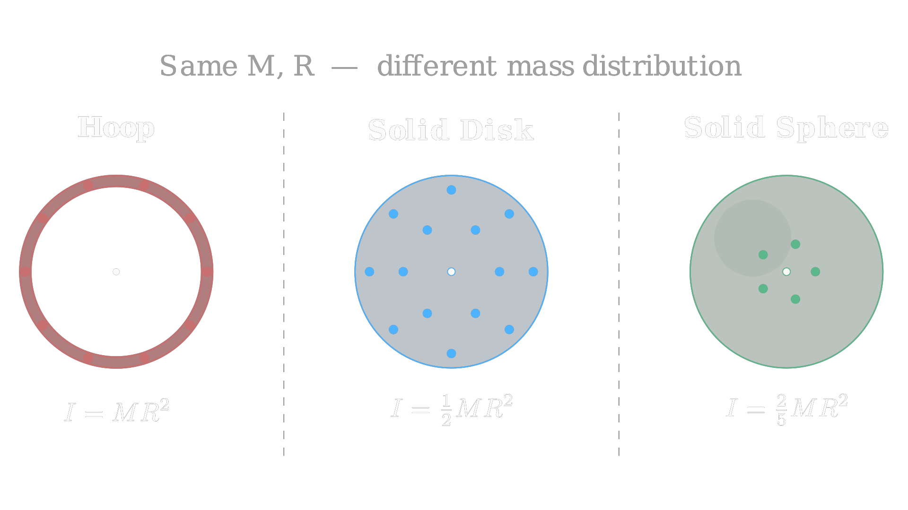
| Shape形状 | Axis转轴 | $I$ |
|---|---|---|
| Thin hoop (ring)薄圆环 | Through center, ⊥ to plane过圆心，垂直于环面 | $MR^2$ |
| Solid disk / cylinder实心圆盘 / 圆柱 | Through center, ⊥ to faces过圆心，垂直于盘面 | $\frac{1}{2}MR^2$ |
| Solid sphere实心球 | Through center过球心 | $\frac{2}{5}MR^2$ |
| Thin spherical shell薄球壳 | Through center过球心 | $\frac{2}{3}MR^2$ |
| Thin rod细杆 | Through center, ⊥ to rod过中点，垂直于杆 | $\frac{1}{12}ML^2$ |
| Thin rod细杆 | Through end, ⊥ to rod过端点，垂直于杆 | $\frac{1}{3}ML^2$ |
The Parallel Axis Theorem平行轴定理
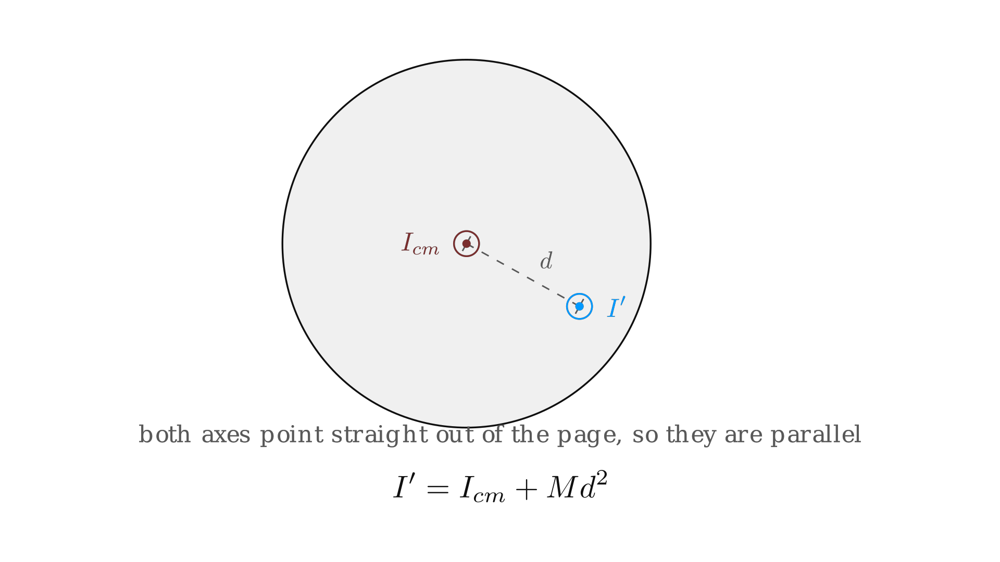
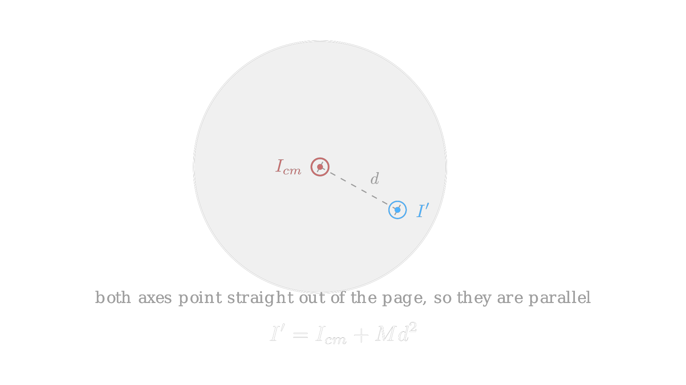
If you know $I_{\text{cm}}$ about an axis through the center of mass, you can find $I'$ about any parallel axis a distance $d$ away:
若已知过质心轴的 $I_{\text{cm}}$，便能求出任意与之平行、相距 $d$ 的另一轴对应的 $I'$：
$I$ is minimized when the axis passes through the center of mass.
当转轴通过质心时 $I$ 取最小值。
Worked Example: Deriving $I$ for a Uniform Thin Rod (Center)例题：推导均匀细杆绕中点的 $I$ Physics C
Derive I for a uniform thin rod of mass M, length L,
about an axis through its center, perpendicular to the rod.
推导质量 M、长度 L 的均匀细杆绕过中点、
且垂直于杆的转轴的 I。
Worked Example: Deriving $I$ for a Solid Disk例题：推导实心圆盘的 $I$ Physics C
Derive I for a uniform solid disk of mass M, radius R,
about its central axis perpendicular to the disk.
推导质量 M、半径 R 的均匀实心圆盘绕
过盘心、垂直于盘面的中心轴的 I。
Worked Example: Parallel Axis Theorem (Rod About End)例题：平行轴定理（细杆绕端点）
Find $I$ of a uniform thin rod of mass $M$, length $L$, about one of its ends.
求质量 $M$、长度 $L$ 的均匀细杆绕一端的转动惯量 $I$。
Worked Example: Parallel Axis Theorem for Three Common Axes例题：平行轴定理的三种常见情形
For each of the following, find $I$ using the parallel axis theorem. Each answer is a table value plus $Md^2$.
下面三种情形分别用平行轴定理求 $I$。每个答案都是表中数值加上 $Md^2$。
physical pendulum）周期 $T = 2\pi\sqrt{I/(Mg\ell)}$。Worked Example: Non-Uniform Rod, $I$ by Integration例题：非均匀杆，用积分求 $I$ Physics C
A thin rod of length $L$ and total mass $M$ has linear mass density $$\lambda(x)=\lambda_0\frac{x}{L}$$ where $x$ is measured from one end. Find its rotational inertia about the end where $x=0$.
长度 $L$、总质量 $M$ 的细杆线密度为 $$\lambda(x)=\lambda_0\frac{x}{L}$$ 其中 $x$ 自一端量起。求绕 $x=0$ 端点的转动惯量。
Read the axis before the shape: a thin rod has $I = \tfrac{1}{12}ML^2$ about its center but $\tfrac{1}{3}ML^2$ about its end. Start the parallel-axis theorem from the center-of-mass axis and add $Md^2$; never subtract it, because $I_{\text{cm}}$ is the smallest value in any family of parallel axes. For point masses, square each mass's perpendicular distance from the axis.
先看转轴，再看形状：细杆绕中点 $I = \tfrac{1}{12}ML^2$，绕端点却是 $\tfrac{1}{3}ML^2$。平行轴定理必须从质心轴出发并加上 $Md^2$，不要减去，因为在一组平行轴中 $I_{\text{cm}}$ 最小。对质点组，把每个质点到转轴的垂直距离平方。
In a derivation, write $dm$ with a density ($\lambda\,dx$ or $\sigma \cdot 2\pi r\,dr$) and state the limits before you integrate, then compare the result with the table value.
推导时先用密度写出 $dm$（$\lambda\,dx$ 或 $\sigma \cdot 2\pi r\,dr$）并标明积分上下限，最后把结果与表中数值对照。
1. Two $0.50\;\text{kg}$ balls are fixed to the ends of a light rod $0.80\;\text{m}$ long. Find $I$ about a perpendicular axis through the center of the rod, and about a parallel axis through one ball.1. 两个 $0.50\;\text{kg}$ 的小球固定在长 $0.80\;\text{m}$ 的轻杆两端。分别求绕过杆中点的垂直轴以及绕过其中一个小球的平行轴的 $I$。
Center: each ball is $0.40\;\text{m}$ away, so $I = 2(0.50)(0.40)^2 = 0.16\;\text{kg}\cdot\text{m}^2$. Through one ball: that ball has $r = 0$ and the other has $r = 0.80\;\text{m}$, so $I = (0.50)(0.80)^2 = 0.32\;\text{kg}\cdot\text{m}^2$. The parallel-axis theorem agrees: $0.16 + (1.0)(0.40)^2 = 0.32\;\text{kg}\cdot\text{m}^2$.
绕中点：每个小球距轴 $0.40\;\text{m}$，$I = 2(0.50)(0.40)^2 = 0.16\;\text{kg}\cdot\text{m}^2$。绕一个小球：该球 $r = 0$，另一个球 $r = 0.80\;\text{m}$，$I = (0.50)(0.80)^2 = 0.32\;\text{kg}\cdot\text{m}^2$。平行轴定理给出相同结果：$0.16 + (1.0)(0.40)^2 = 0.32\;\text{kg}\cdot\text{m}^2$。
2. A $2.0\;\text{kg}$ solid disk of radius $0.30\;\text{m}$ turns about an axis through a point on its rim, parallel to its central axis. Find $I$.2. 质量 $2.0\;\text{kg}$、半径 $0.30\;\text{m}$ 的实心圆盘绕过盘缘一点、平行于中心轴的轴转动。求 $I$。
$I = \tfrac{1}{2}MR^2 + MR^2 = \tfrac{3}{2}(2.0)(0.30)^2 = 0.27\;\text{kg}\cdot\text{m}^2$.
$I = \tfrac{1}{2}MR^2 + MR^2 = \tfrac{3}{2}(2.0)(0.30)^2 = 0.27\;\text{kg}\cdot\text{m}^2$。
3. A $2.0\;\text{kg}$ hoop and a $3.0\;\text{kg}$ solid disk have the same radius $R$. Which is harder to spin up about its central axis?3. $2.0\;\text{kg}$ 的圆环与 $3.0\;\text{kg}$ 的实心圆盘半径都为 $R$。绕各自中心轴，哪一个更难转起来？
$I_{\text{hoop}} = (2.0)R^2$ and $I_{\text{disk}} = \tfrac{1}{2}(3.0)R^2 = 1.5R^2$. The hoop has the larger $I$ despite its smaller mass, because all of its mass sits at radius $R$.
$I_{\text{hoop}} = (2.0)R^2$，$I_{\text{disk}} = \tfrac{1}{2}(3.0)R^2 = 1.5R^2$。尽管圆环质量较小，它的 $I$ 却更大，因为它的全部质量都位于半径 $R$ 处。
4. Show by integration that a uniform rod of mass $M$ and length $L$ has $I = \tfrac{1}{3}ML^2$ about one end.4. 用积分证明质量 $M$、长度 $L$ 的均匀细杆绕一端的 $I = \tfrac{1}{3}ML^2$。 Physics C
With $dm = (M/L)\,dx$ and $x$ from the end: $I = \int_0^L x^2 \tfrac{M}{L}\,dx = \tfrac{M}{L}\cdot\tfrac{L^3}{3} = \tfrac{1}{3}ML^2$, the same as the parallel-axis result.
取 $dm = (M/L)\,dx$，$x$ 从端点量起：$I = \int_0^L x^2 \tfrac{M}{L}\,dx = \tfrac{M}{L}\cdot\tfrac{L^3}{3} = \tfrac{1}{3}ML^2$，与平行轴定理的结果相同。
Rotational Equilibrium力矩平衡
- State the two conditions for static equilibrium: $\sum \vec{F} = 0$ and $\sum \tau = 0$.
- Explain why the pivot for the torque equation may be chosen anywhere, and choose it to eliminate an unknown force.
- Calculate the support forces on a beam from torque balance and force balance.
- Solve a ladder problem by taking torques about its base and balancing horizontal and vertical forces.
- Explain that zero net torque means constant angular velocity, not necessarily zero angular velocity.
- 写出静力平衡的两个条件：$\sum \vec{F} = 0$ 与 $\sum \tau = 0$。
- 解释为什么力矩方程的支点可以任意选取，并把它选在能消去未知力的位置。
- 由力矩平衡与力平衡计算梁所受的支持力。
- 对梯子底端取力矩，并结合水平与竖直方向的力平衡求解梯子问题。
- 解释合力矩为零意味着角速度不变，而不一定是角速度为零。
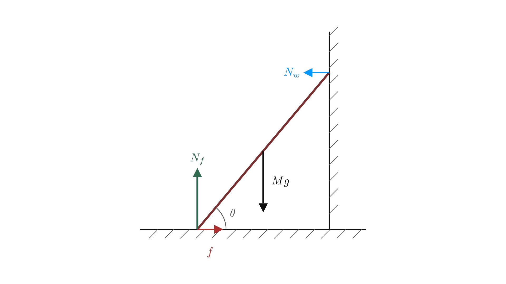
Just as translational equilibrium requires zero net force and constant velocity, rotational equilibrium requires zero net torque and constant angular velocity. These two kinds of equilibrium are independent: an object can be in rotational equilibrium without being in translational equilibrium, and vice versa.
平动平衡要求合力为零、速度恒定；力矩平衡（rotational equilibrium）则要求合力矩为零、角速度恒定。两种平衡相互独立：一个物体可以处于力矩平衡而不处于平动平衡，反之亦然。
Newton's first law in rotational form: a rigid body (fixed rotational inertia $I$) keeps a constant angular velocity if and only if the net torque on it is zero. The converse is equally important: if the torques on a rigid body are not balanced, its $\omega$ must be changing. If $I$ can change (a skater pulling in her arms), zero net torque keeps the angular momentum $L = I\omega$ constant, not $\omega$ (Unit 6).
这是 Newton 第一定律的转动版本：刚体（转动惯量 $I$ 固定）保持角速度不变，当且仅当合力矩为零。其逆命题同样重要：若作用在刚体上的力矩不平衡，它的 $\omega$ 必定在变。若 $I$ 可以改变（例如滑冰者收拢手臂），合力矩为零时保持不变的是角动量 $L = I\omega$，而不是 $\omega$（见 Unit 6）。
static equilibrium）
对静止物体，两条条件同时使用：$\sum \vec{F} = 0$（平动）与 $\sum \tau = 0$（转动）。支点（pivot）选取自由，可以选在某个未知力的作用点上，可让该未知力消去（$r = 0$），让代数最简。
Worked Example: Balanced Beam例题：平衡梁
A uniform beam: M = 12 kg, L = 3.0 m, rests on two supports:
one at the left end, one at 2.0 m from the left end.
Find the forces from each support.
均匀梁：M = 12 kg、L = 3.0 m，两端支撑分别位于
左端及距左端 2.0 m 处。
求两个支撑的支持力。
Worked Example: Ladder Against a Wall例题：倚墙的梯子
A uniform ladder of mass M = 15 kg and length L = 4.0 m
leans against a frictionless wall at angle 60° from the floor.
Find the normal force from the wall and the friction from the floor.
质量 M = 15 kg、长度 L = 4.0 m 的均匀梯子
以与地面成 60° 的角倚靠在无摩擦墙上。
求墙的法向力与地面的摩擦力。
fulcrum）位于 60 cm 处时平衡。设均匀米尺质量为 $m$，下列哪个方程能正确求出 $m$？（对支点取力矩；米尺重力作用于 50 cm 处。）Write the equations in symbols before any numbers: one torque sum about a pivot you name, plus the force sums. Put the pivot where the most unknown forces act, write each torque as force times lever arm with its sign, and place the weight of a uniform beam or ladder at its center. To check, take torques about a second point: the net torque must be zero there too.
先写符号方程再代入数字：对你指明的支点列一个力矩和，再列出力的和。把支点选在未知力最多的位置，每个力矩写成"力乘以力臂"并带正负号，均匀梁或梯子的重力作用在其中点。验算时对另一点再取一次力矩：那里的合力矩也必须为零。
1. A uniform meter stick balances on a fulcrum at its $50\;\text{cm}$ mark. A $0.20\;\text{kg}$ mass hangs at the $20\;\text{cm}$ mark. Where must a $0.30\;\text{kg}$ mass hang to keep the stick balanced?1. 均匀米尺以 $50\;\text{cm}$ 刻度处为支点保持平衡。在 $20\;\text{cm}$ 刻度处挂 $0.20\;\text{kg}$ 的物体。$0.30\;\text{kg}$ 的物体应挂在哪里才能使米尺保持平衡？
The stick's weight acts at the fulcrum and gives no torque. $(0.20)g(30) = (0.30)g\,d$, so $d = 20\;\text{cm}$ on the other side of the fulcrum: the $70\;\text{cm}$ mark.
米尺的重力作用在支点上，不产生力矩。$(0.20)g(30) = (0.30)g\,d$，得 $d = 20\;\text{cm}$，位于支点另一侧，即 $70\;\text{cm}$ 刻度处。
2. Can an object with zero net torque on it be rotating? Explain.2. 合力矩为零的物体可以在转动吗？请解释。
Yes. Zero net torque gives $\alpha = 0$, so $\omega$ stays constant, and that constant can be any value. A wheel spinning at a steady rate on a frictionless axle is in rotational equilibrium.
可以。合力矩为零给出 $\alpha = 0$，所以 $\omega$ 保持不变，而这个不变值可以是任意值。在无摩擦轮轴上匀速转动的轮子就处于力矩平衡。
3. A uniform $20\;\text{kg}$ plank $4.0\;\text{m}$ long rests on supports at its two ends. A $60\;\text{kg}$ person stands $1.0\;\text{m}$ from the left end. Find both support forces ($g = 9.8\;\text{m/s}^2$).3. 长 $4.0\;\text{m}$、质量 $20\;\text{kg}$ 的均匀木板两端各有一个支撑。一个 $60\;\text{kg}$ 的人站在距左端 $1.0\;\text{m}$ 处。求两个支持力（$g = 9.8\;\text{m/s}^2$）。
Torques about the left end: $F_R(4.0) = (196)(2.0) + (588)(1.0) = 980$, so $F_R = 245\;\text{N}$. Force balance: $F_L = 196 + 588 - 245 = 539\;\text{N}$. The support nearer the person carries more.
对左端取力矩：$F_R(4.0) = (196)(2.0) + (588)(1.0) = 980$，得 $F_R = 245\;\text{N}$。力平衡：$F_L = 196 + 588 - 245 = 539\;\text{N}$。离人较近的支撑承受的力更大。
Newton's Second Law: Rotational FormNewton 第二定律：转动形式
- Apply $\tau_{\text{net}} = I\alpha$ to find the angular acceleration of a rigid body about a fixed axis.
- Write separate translational and rotational equations for pulleys, yo-yos and rolling objects, and link them with $a = r\alpha$.
- Explain why the tensions on the two sides of a pulley with mass are different.
- Calculate the acceleration of an object rolling without slipping down an incline, and rank shapes by $I/(mR^2)$.
- Explain why static friction supplies the torque for rolling without slipping but does no work.
- 应用 $\tau_{\text{net}} = I\alpha$ 求刚体绕固定轴的角加速度。
- 对滑轮、悠悠球与滚动物体分别列出平动与转动方程，并用 $a = r\alpha$ 联系起来。
- 解释为什么有质量的滑轮两侧张力不同。
- 计算沿斜面无滑滚动物体的加速度，并按 $I/(mR^2)$ 给不同形状排序。
- 解释为什么静摩擦力为无滑滚动提供力矩却不做功。
The crown jewel of rotational dynamics: just as $\vec{F}_{\text{net}} = m\vec{a}$ governs translation, the net torque on a rigid body determines its angular acceleration, scaled by its rotational inertia:
转动动力学的核心：正如 $\vec{F}_{\text{net}} = m\vec{a}$ 支配平动，刚体所受的合力矩通过其转动惯量决定其角加速度：
Equivalently: $\alpha = \tau_{\text{net}} / I$
等价地：$\alpha = \tau_{\text{net}} / I$
For a given net torque, a body with larger rotational inertia has smaller angular acceleration: it is "harder to spin up."
在同样净力矩下，转动惯量越大的物体角加速度越小：它"越难被转起来"。
Rolling Without Slipping on an Incline斜面上的无滑滚动
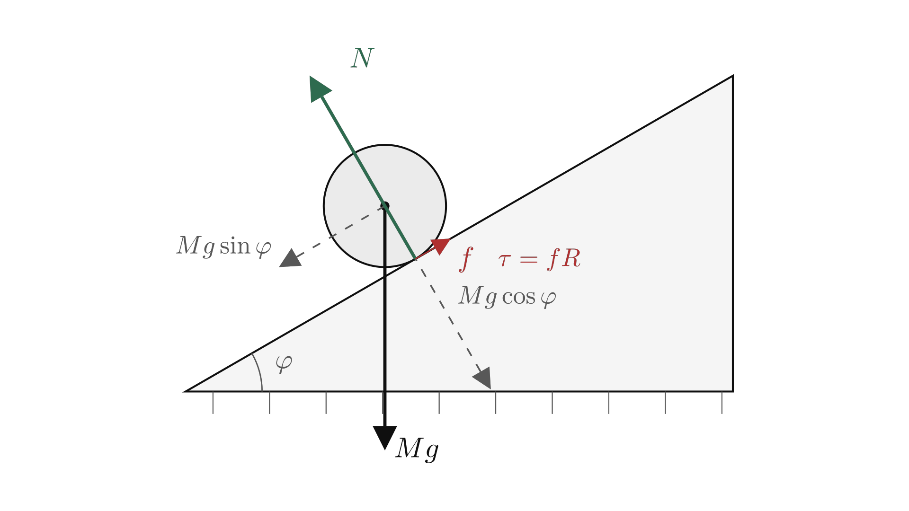
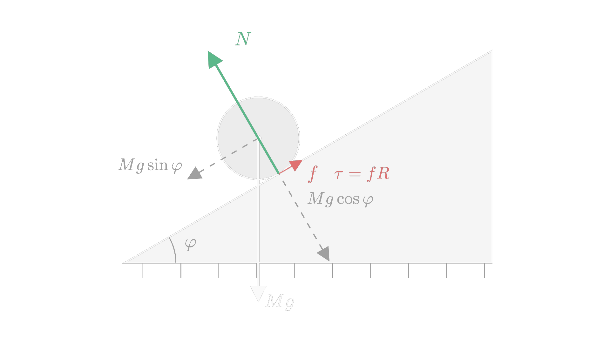
A common and powerful result: for any symmetric object rolling without slipping down an incline at angle $\phi$:
一个常用且有力的结论：任何对称物体在倾角为 $\phi$ 的斜面上做无滑滚动时：
Objects with larger $I/(mR^2)$ roll more slowly. Of the round shapes in the table, a hoop ($I/mR^2 = 1$) is the slowest and a solid sphere ($I/mR^2 = 2/5$) is the fastest.
$I/(mR^2)$ 越大，滚得越慢。在表中的圆形物体里，圆环（$I/mR^2 = 1$）最慢，实心球（$I/mR^2 = 2/5$）最快。
Worked Example: Atwood Machine with a Pulley例题：含真实滑轮的 Atwood 机
A solid disk pulley: M = 2.0 kg, R = 0.10 m.
实心圆盘滑轮：M = 2.0 kg、R = 0.10 m。
Worked Example: Yo-Yo Falling例题：下落的悠悠球（yo-yo）
A yo-yo: mass m, axle radius r, rotational inertia I.
Released from rest. Find the downward acceleration.
悠悠球：质量 m、轴半径 r、转动惯量 I。
从静止释放，求下落加速度。
Worked Example: Solid Sphere Rolling Down a Ramp例题：实心球沿斜面滚下
A solid sphere rolls without slipping down a 30° incline.
Find (a) the acceleration, (b) the friction force.
实心球沿 30° 斜面做无滑滚动。
求 (a) 加速度；(b) 摩擦力。
Draw a force diagram for each block and an extended diagram for the pulley or wheel, and choose positive directions that agree with the motion (down for the heavier block, the matching turning sense for the pulley) so that $a = r\alpha$ needs no sign change. A pulley with mass needs two tension labels, $T_1$ and $T_2$; a single $T$ throws away the torque that turns it. End with a limit check: setting $I = 0$ must give the massless-pulley or frictionless-slide answer.
每个木块画一张受力图，滑轮或轮子画扩展受力图；正方向要与运动一致（较重的木块取向下，滑轮取对应的转向），这样 $a = r\alpha$ 无需改变符号。有质量的滑轮要标出两个张力 $T_1$ 与 $T_2$；只写一个 $T$ 就丢掉了让它转动的力矩。最后做极限检验：令 $I = 0$，结果必须回到无质量滑轮或无摩擦下滑的答案。
1. A grinding wheel (a solid disk of mass $4.0\;\text{kg}$ and radius $0.50\;\text{m}$) starts from rest under a constant net torque of $2.0\;\text{N}\cdot\text{m}$. How long does it take to reach $20\;\text{rad/s}$?1. 砂轮（质量 $4.0\;\text{kg}$、半径 $0.50\;\text{m}$ 的实心圆盘）在 $2.0\;\text{N}\cdot\text{m}$ 的恒定合力矩作用下由静止开始转动。经过多长时间达到 $20\;\text{rad/s}$？
$I = \tfrac{1}{2}(4.0)(0.50)^2 = 0.50\;\text{kg}\cdot\text{m}^2$, so $\alpha = 2.0/0.50 = 4.0\;\text{rad/s}^2$ and $t = 20/4.0 = 5.0\;\text{s}$.
$I = \tfrac{1}{2}(4.0)(0.50)^2 = 0.50\;\text{kg}\cdot\text{m}^2$，所以 $\alpha = 2.0/0.50 = 4.0\;\text{rad/s}^2$，$t = 20/4.0 = 5.0\;\text{s}$。
2. A hoop and a solid disk with the same mass and radius are released together on the same incline and roll without slipping. Which reaches the bottom first, and why?2. 质量与半径都相同的圆环和实心圆盘从同一斜面同时释放，均无滑滚动。哪个先到达底端？为什么？
The disk. $a = g\sin\phi/(1 + I/(mR^2))$ gives $\tfrac{2}{3}g\sin\phi$ for the disk and $\tfrac{1}{2}g\sin\phi$ for the hoop. Mass and radius cancel, so only the shape (how far the mass sits from the axis) matters.
圆盘。由 $a = g\sin\phi/(1 + I/(mR^2))$，圆盘为 $\tfrac{2}{3}g\sin\phi$，圆环为 $\tfrac{1}{2}g\sin\phi$。质量和半径都约掉了，只有形状（质量离转轴有多远）起作用。
3. A light string wrapped around a solid-cylinder pulley ($M = 4.0\;\text{kg}$, $R = 0.20\;\text{m}$, frictionless axle) holds a hanging $2.0\;\text{kg}$ block. Find the block's acceleration and the string tension.3. 一根轻绳绕在实心圆柱滑轮上（$M = 4.0\;\text{kg}$，$R = 0.20\;\text{m}$，轮轴无摩擦），下端挂一个 $2.0\;\text{kg}$ 的木块。求木块的加速度与绳中张力。
Block: $mg - T = ma$. Pulley: $TR = \tfrac{1}{2}MR^2(a/R)$, so $T = \tfrac{1}{2}Ma$. Adding: $mg = (m + \tfrac{1}{2}M)a$, so $a = (2.0)(9.8)/(2.0 + 2.0) = 4.9\;\text{m/s}^2$ and $T = \tfrac{1}{2}(4.0)(4.9) = 9.8\;\text{N}$.
木块：$mg - T = ma$。滑轮：$TR = \tfrac{1}{2}MR^2(a/R)$，所以 $T = \tfrac{1}{2}Ma$。两式相加：$mg = (m + \tfrac{1}{2}M)a$，得 $a = (2.0)(9.8)/(2.0 + 2.0) = 4.9\;\text{m/s}^2$，$T = \tfrac{1}{2}(4.0)(4.9) = 9.8\;\text{N}$。
Preparing Unit 5 for the AP Exam为 AP 考试准备第 5 单元
AP Physics C: Mechanics, from May 2027: Section I has 42 multiple-choice questions in 85 minutes (50% of the score) and Section II has 4 free-response questions in 95 minutes (50% of the score). Unit 5 is 10-15% of the multiple-choice section.
AP Physics C: Mechanics（自 2027 年 5 月起）：第一部分为 42 道选择题，用时 85 分钟（占总分 50%）；第二部分为 4 道自由作答题，用时 95 分钟（占总分 50%）。第 5 单元占选择题部分的 10-15%。
AP Physics 1, from May 2027: Section I has 42 multiple-choice questions in 85 minutes (50% of the score) and Section II has 4 free-response questions in 95 minutes (50% of the score). Unit 5 is 10-15% of the multiple-choice section.
AP Physics 1（自 2027 年 5 月起）：第一部分为 42 道选择题，用时 85 分钟（占总分 50%）；第二部分为 4 道自由作答题，用时 95 分钟（占总分 50%）。第 5 单元占选择题部分的 10-15%。
Multiple Choice）Rotational vs translational quantities: all points on a rigid body share the same $\omega$ and $\alpha$, but have different $v$ and $a_T$ depending on radius.
区分转动量与平动量：同一刚体上所有点的 $\omega$、$\alpha$ 相同，但 $v$ 和 $a_T$ 随半径不同而不同。
Functional dependence: "If the force doubles, what happens to the torque?" Use proportional reasoning from $\tau = rF\sin\theta$.
函数关系："力翻倍，力矩怎么变？"由 $\tau = rF\sin\theta$ 用比例推理即可。
Compare shapes: which object rolls faster down an incline? Use $a = g\sin\phi/(1 + I/mR^2)$.
形状比较：哪种物体沿斜面滚得更快？用 $a = g\sin\phi/(1 + I/mR^2)$。
Free Response）Section II has one question of each type: mathematical routines; translation between representations; experimental design and analysis; qualitative/quantitative translation.
第二部分四种题型各一道：数学过程（mathematical routines）；不同表征之间的转换（translation between representations）；实验设计与分析（experimental design and analysis）；定性与定量之间的转换（qualitative/quantitative translation）。
Mathematical routines Physics C Practise deriving $I$ by integration: define $dm$, state the limits and show every step, so the method is visible and not only the result.
数学过程 Physics C 练习用积分推导 $I$：先定义 $dm$，再写明积分上下限，每一步都写清楚，让方法本身可见，而不只是结果。
Mathematical routines: practise writing $\tau_{\text{net}} = I\alpha$ and $F_{\text{net}} = ma$ in symbols first, then substituting numbers with units, so the method is visible and not only the result.
数学过程：练习先写出符号形式的 $\tau_{\text{net}} = I\alpha$ 与 $F_{\text{net}} = ma$，再代入带单位的数字，让方法本身可见，而不只是结果。
Combined translation and rotation: Atwood machines with massive pulleys, rolling objects on inclines. Write separate $F = ma$ and $\tau = I\alpha$ equations, then connect them with $a = r\alpha$.
平动与转动相结合的问题：带质量的滑轮、斜面上滚动的物体。分别写出 $F = ma$ 与 $\tau = I\alpha$，再用 $a = r\alpha$ 把两者联系起来。
Qualitative/quantitative translation: predict how changing one variable affects another (for example, "if mass is moved farther from the axis, how does $\alpha$ change?"), then justify the prediction with an equation.
定性与定量之间的转换：预测一个变量变化时另一个变量如何变化（例如"质量移到离轴更远处后 $\alpha$ 怎么变？"），并用方程论证你的预测。
- Using degrees instead of radians: rotational kinematics and $v = r\omega$ need radians.
- Confusing $\omega$ and $v$: angular velocity $\omega$ is the same for all points; tangential speed $v = r\omega$ depends on $r$.
- Wrong axis for $I$: a rod about its center ($ML^2/12$) is not a rod about its end ($ML^2/3$).
- Forgetting the constraint $a = r\alpha$ in combined translation-rotation problems.
- Choosing an awkward pivot in equilibrium: pick the pivot where an unknown force acts to eliminate it.
- Sign errors in torque: assign a positive direction at the start and apply it consistently.
- Claiming friction does work in rolling without slipping: the contact point has zero velocity.
- 用角度而非弧度：转动运动学与 $v = r\omega$ 都必须用弧度。
- 混淆 $\omega$ 与 $v$：同一刚体上 $\omega$ 相同，但切向速率 $v = r\omega$ 取决于 $r$。
- $I$ 的转轴选错：细杆绕中点（$ML^2/12$）不同于绕端点（$ML^2/3$）。
- 在平动与转动相结合的问题里忘记 $a = r\alpha$ 这个约束。
- 平衡问题里支点选得不好：选在某个未知力的作用点，将它消去。
- 力矩正负号搞错：一开始就定好正方向并贯穿全题。
- 误以为无滑滚动中摩擦力做功：接触点瞬时速度为零。
Flashcards: Click to Flip闪卡：点击翻面
down an incline?沿斜面的
滚动加速度？
Larger $I/(mR^2)$ → slower roll.$I/(mR^2)$ 越大 → 滚得越慢。
Unit 5: Practice Quiz第 5 单元：练习测验
Worked Example: Atwood Machine with Massive Pulley (FRQ Style)例题：带质量滑轮的 Atwood 机（FRQ 风格）
Two blocks ($m_1 = 4.0\;\text{kg}$, $m_2 = 6.0\;\text{kg}$) are connected by a massless string over a solid disk pulley ($M = 2.0\;\text{kg}$, $R = 0.10\;\text{m}$). The string does not slip on the pulley. Find the system's acceleration and the angular acceleration of the pulley.
两个木块（$m_1 = 4.0\;\text{kg}$、$m_2 = 6.0\;\text{kg}$）通过一根无质量的绳跨过实心圆盘滑轮（$M = 2.0\;\text{kg}$、$R = 0.10\;\text{m}$）相连。绳与滑轮之间不打滑。求系统的加速度与滑轮的角加速度。
Principle: Newton's 2nd Law (translational + rotational): $F = ma$ for each mass, $\tau_{\text{net}} = I\alpha$ for pulley
原理：Newton 第二定律的平动 + 转动形式：每个木块用 $F = ma$，滑轮用 $\tau_{\text{net}} = I\alpha$。
Constraint: No slipping → $a = R\alpha$, and the tensions on each side of the pulley are different.
约束：不打滑 → $a = R\alpha$；滑轮两侧的张力不相等。
Find: $a$ (system acceleration), $\alpha$ (pulley angular acceleration)
求：$a$（系统加速度）、$\alpha$（滑轮角加速度）。
Three objects → three free-body diagrams → three equations.
三个物体 → 三张受力图 → 三个方程。
Define positive: $m_2$ moves down, $m_1$ moves up, pulley rotates counterclockwise.
定正方向：$m_2$ 向下、$m_1$ 向上、滑轮逆时针。
Worked Example: Rolling Without Slipping Down an Incline (FRQ Style)例题：斜面上无滑滚动（FRQ 风格）
A solid cylinder of mass $m$ and radius $R$ starts from rest at the top of a rough incline (angle $\phi$, height $h$). It rolls without slipping to the bottom. Find (a) the acceleration, (b) the friction force, and (c) the speed at the bottom.
质量 $m$、半径 $R$ 的实心圆柱从粗糙斜面顶端静止释放（倾角 $\phi$、高度 $h$），无滑滚至底端。求 (a) 加速度；(b) 摩擦力；(c) 底端速率。
Principles: Newton's 2nd law (translational + rotational), rolling constraint $a = R\alpha$, energy conservation.
原理：Newton 第二定律（平动 + 转动）、滚动约束 $a = R\alpha$、能量守恒。
Static friction provides torque but does no work (contact point at rest).
静摩擦力提供力矩，但不做功（接触点瞬时静止）。
Forces on cylinder: $mg\sin\phi$ (down incline), $N$ (normal), $f_s$ (static friction, up incline at contact).
圆柱受力：$mg\sin\phi$（沿斜面向下）、$N$（法向力）、$f_s$（接触点的静摩擦力，沿斜面向上）。
鼎睿学苑 · Dingrui Scholars
AP Physics C: Mechanics · Unit 5: Torque & Rotational Dynamics · 2026 EditionAP Physics C: Mechanics · 第 5 单元：力矩与转动动力学 · 2026 版
AP Physics 1 · Unit 5: Torque & Rotational Dynamics · 2026 EditionAP Physics 1 · 第 5 单元：力矩与转动动力学 · 2026 版